One city, five orbits
Day by day
- Tue Jul 14 · 9:25pmJetBlue 359, the redeye. Lands 5:59am."i am in New York City" at 3:33am my time. Home base: Eugenie Birch's apartment. Foster's mom, Penn professor, forty years of knowing you, keys in your hand.
- Wed Jul 15 · 5amYou photographed Foster's synth wall at dawn.Fourteen photos of Eurorack modules between 5:02 and 5:11am, then you commissioned two gift sites, one for the studio, one for the birthday. First full day in New York, spent building for someone else on no sleep.
- Fri Jul 17 · nightBreakaway NYC, Under the K Bridge Park. You, Brennan, Foster, Abdul."i am here right now with BrenBren , remember." First-ever Camoufly at the Creekside stage, Tiësto closing over the East River. The debut year of the festival, and you were on the floor with your son.
- Sat Jul 18Foster's 55th: Knicks photo op at Fanatics Fest, Zeds Dead at Forest Hills."we are getting his picture live with Foster" with Landry Shamet. You bought those passes ten days early. The birthday was engineered, lovingly, like a heist.
- Sun Jul 19World Cup Final day. The whole city vibrating.And your only message to me the entire day was "what is the venue for Dane's wedding." More on that below.
- Mon Jul 20 · morningGGP Scholars Brunch: "we are at Friend of a Farmer at Irving place."Venue saved by Mabel after Mark's Off Madison turned out to close Mondays. You hosted; scholars showed; Carnegie Mellon connections got made over pancakes.
- Tue-Wed Jul 21-22Games for Change at The Glasshouse. KBBQ with Jenn Panattoni after her impact award.You met Li from Discord's Pride ERG at G4C, and that conversation seeded The KiKi. You also live-edited a workshop site from the festival floor, because of course you did.
- Wed Jul 22 · eveningThe Whoopi Monologues, Lincoln Center."summarize the Whoopi monologues for me. How long is the show?" Asked from the line, answered before the curtain.
- Thu Jul 23JFK to Seattle, Delta 1719, seat 11E."i spent the week with eric and sinjin." The dense week ended with the two people who carry GGP with you, and the next wedding already loading.
The week in frames
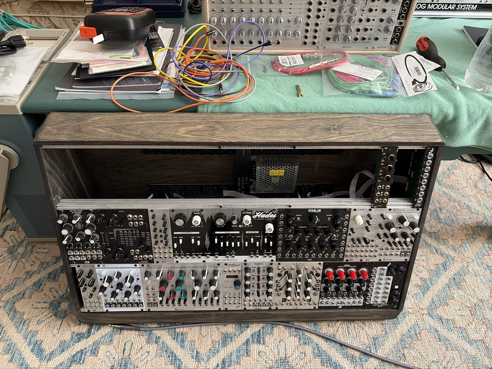
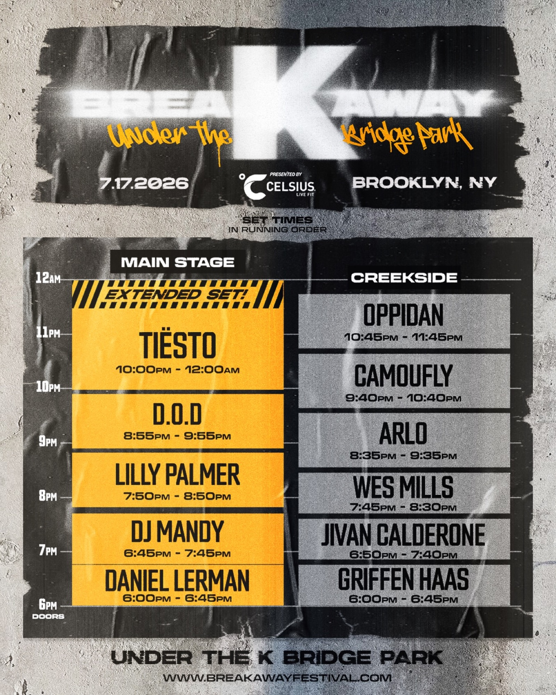
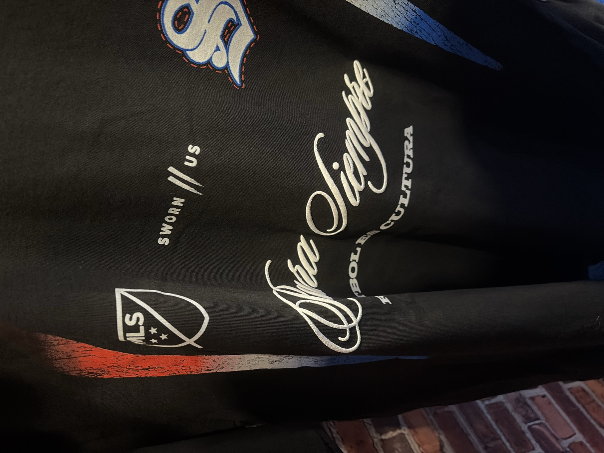
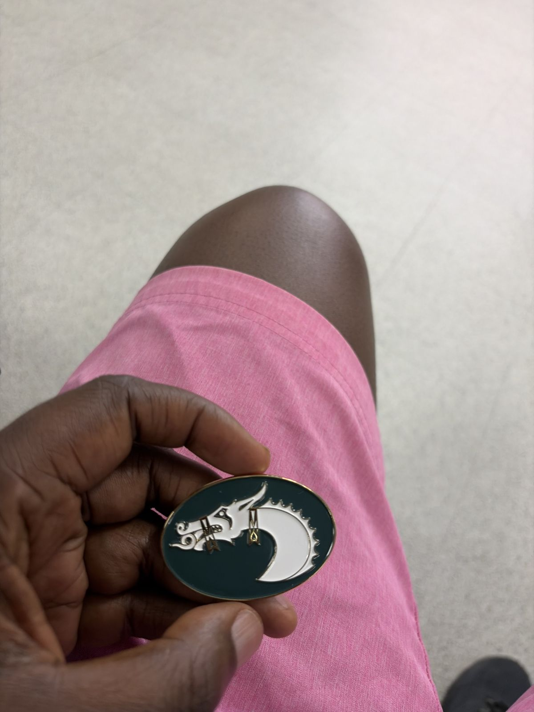
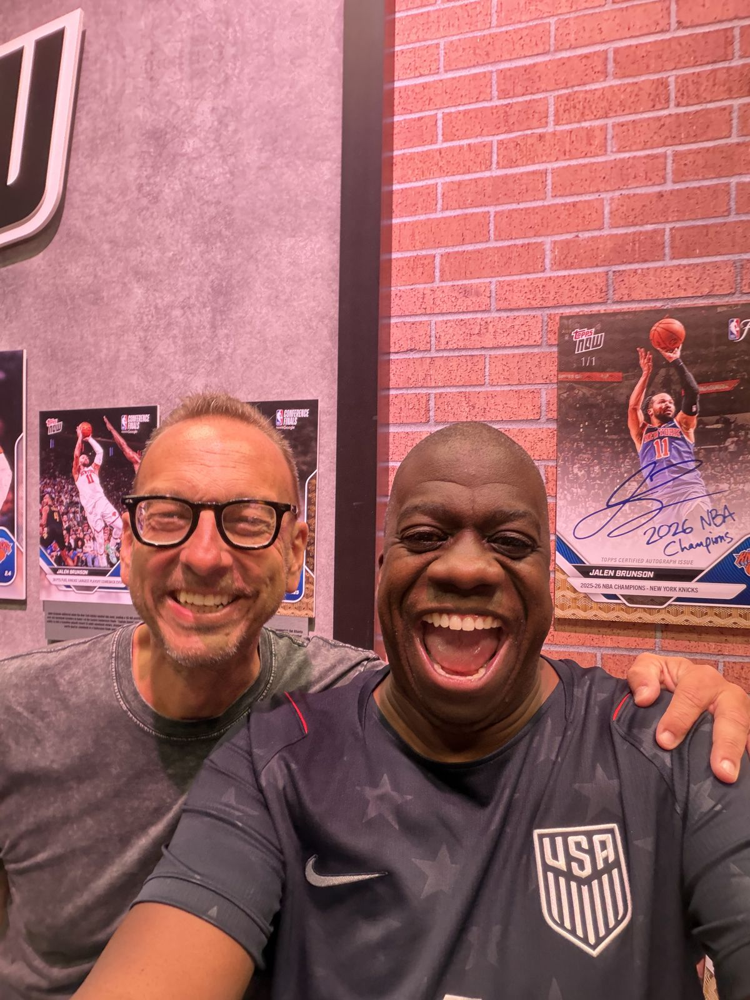
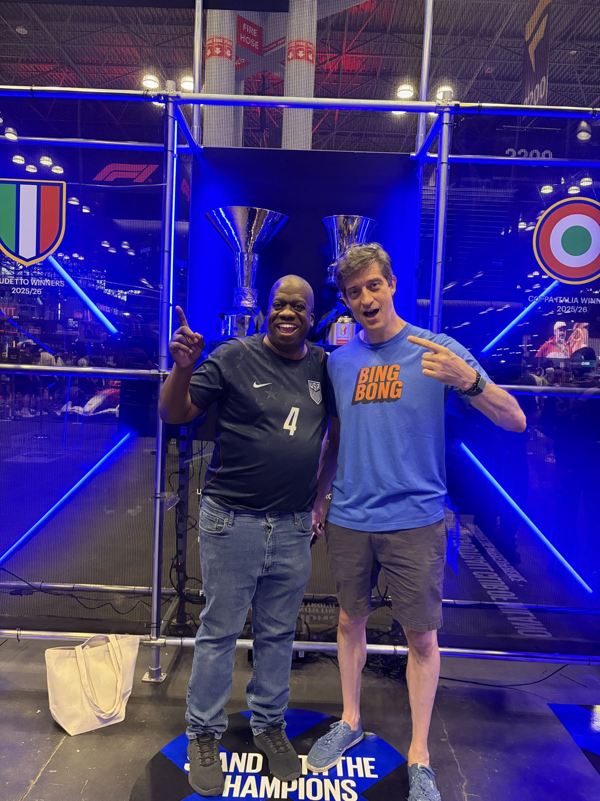
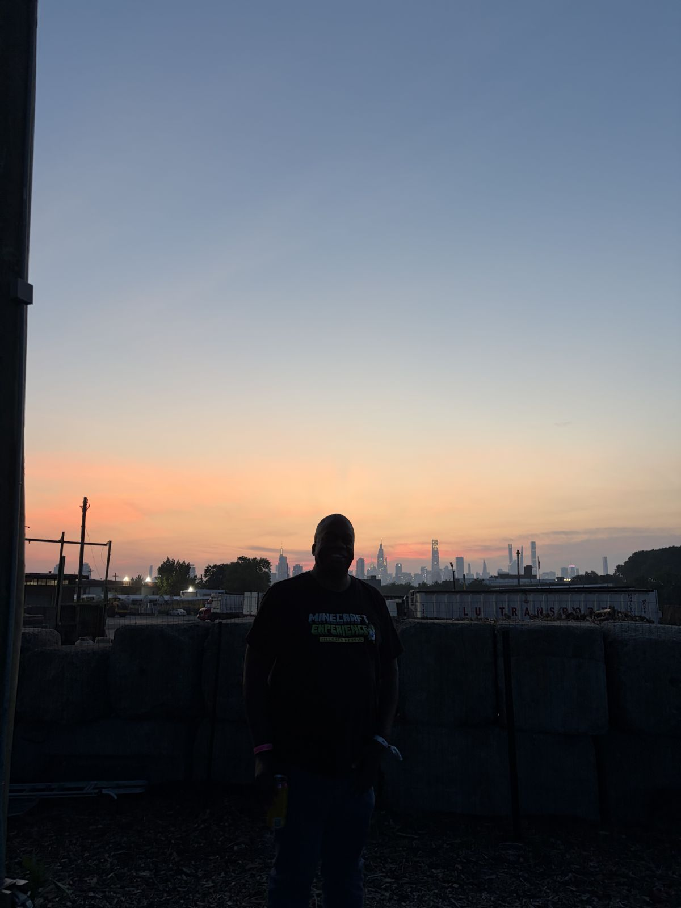
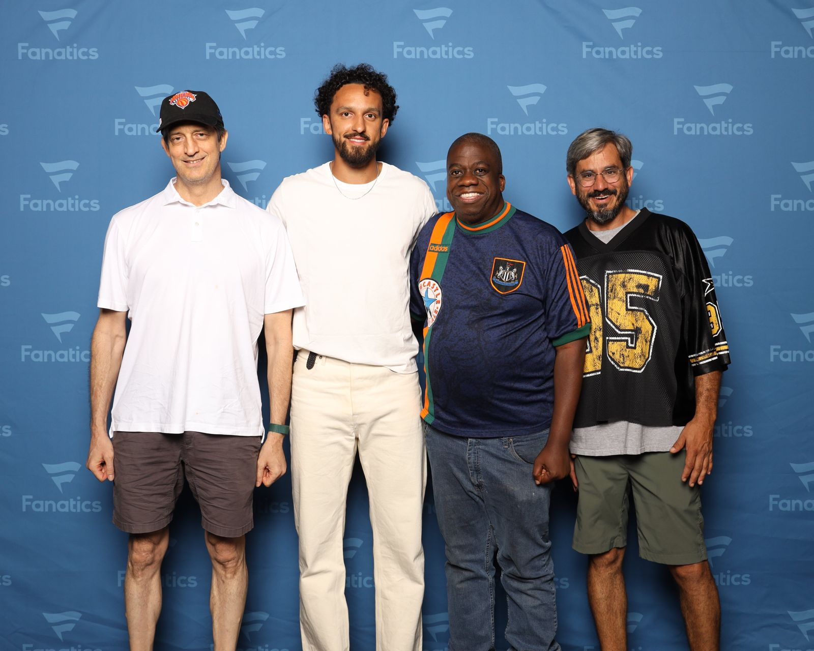
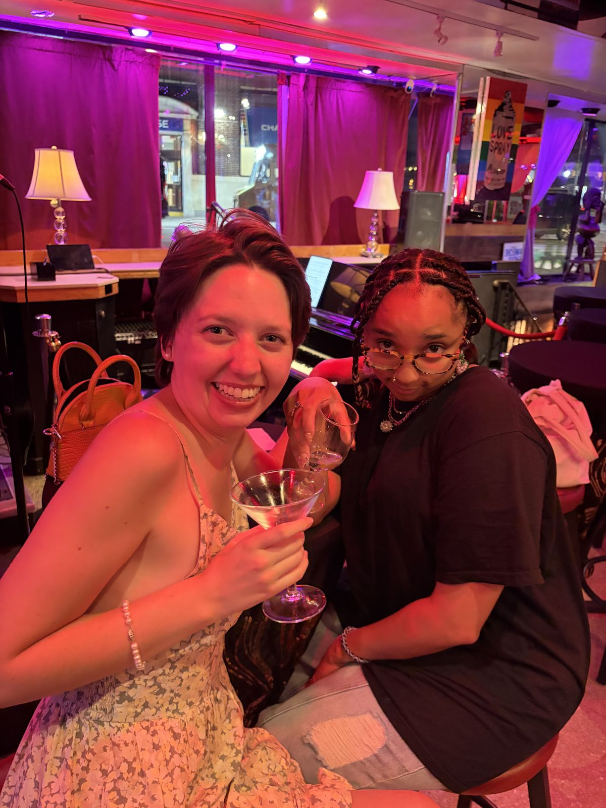
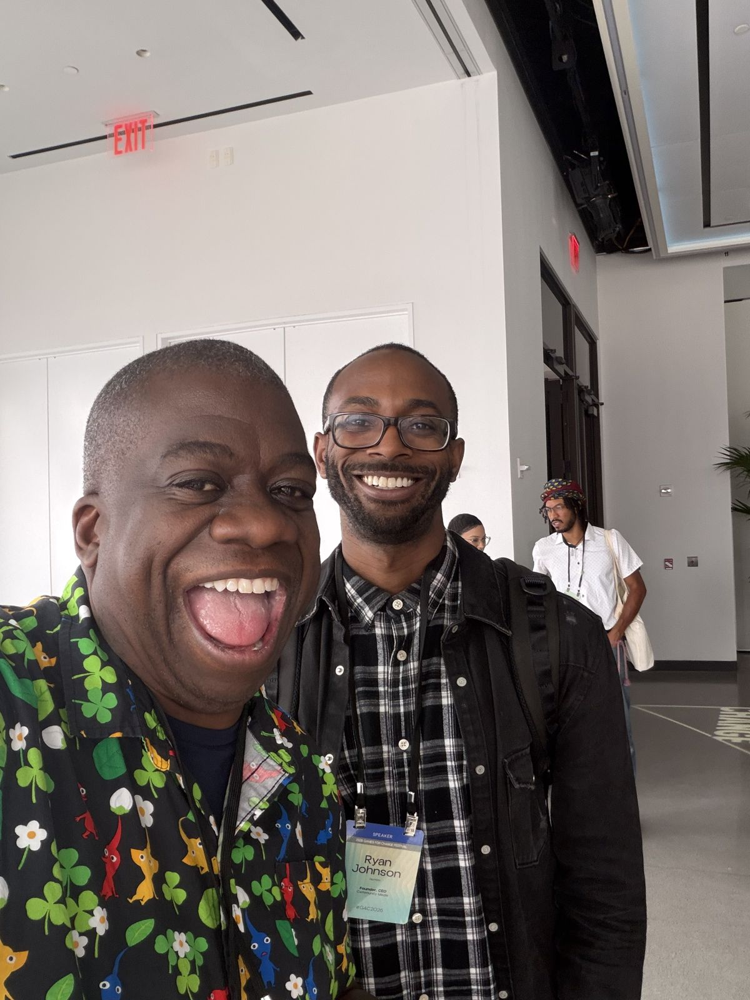
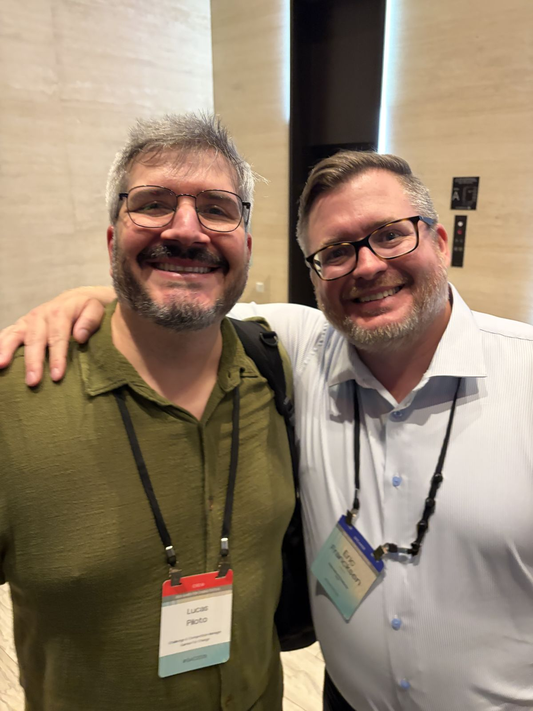
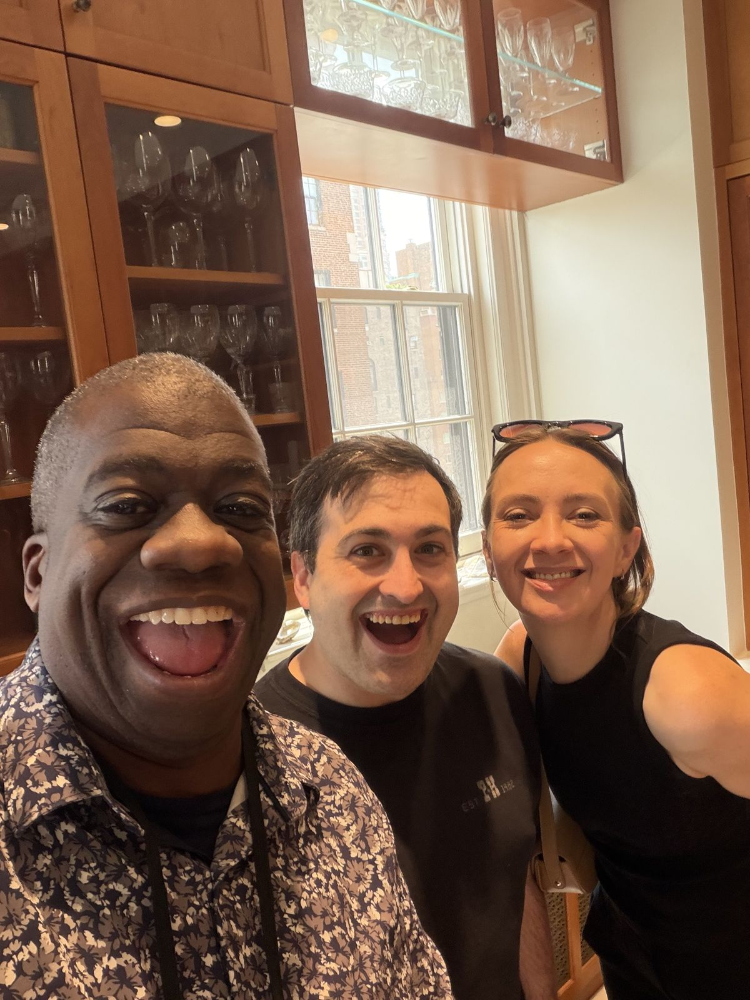
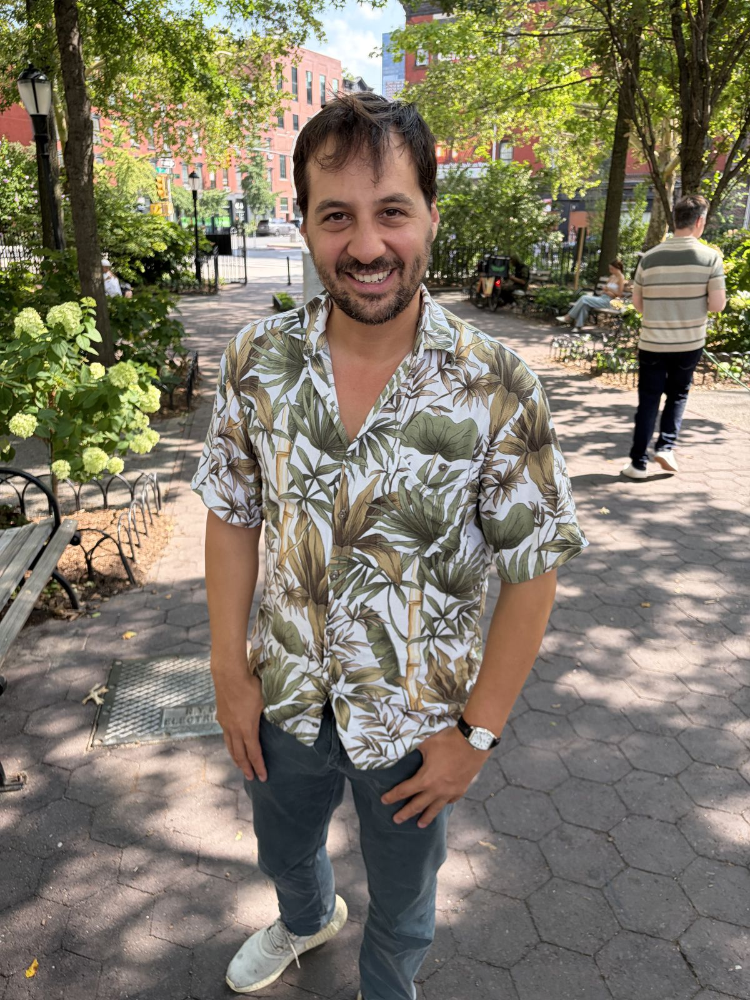
The K Bridge pads
Four sounds from that night under the bridge. Tap them. Make a tiny set. Tiësto is not watching, probably.
Three things you were too busy living to notice
Your first two New York nights were spent making gifts
Between 3am and 6am Eastern on your first two nights, you were building: lookalike jokes for Mason, a studio site for Foster, a birthday site to go with it. The city that never sleeps met a man who would not sleep until his people were taken care of. The trip opened in service.
On the loudest day, one quiet question
July 19 was the World Cup Final, the single biggest sports day of your year, in the loudest sports city on earth. You sent exactly one message: "what is the venue for Dane's wedding." Six days before Leavenworth, the officiant in you was already standing at the altar.
Almost nothing that week was for you
Foster's two sites. The crew dossier. Eugenie's thank-you note. The workshop site for strangers at G4C. Scanning the whole week's requests, the first thing you asked for yourself was a playlist, on day five. The dense week was dense with other people's joy.